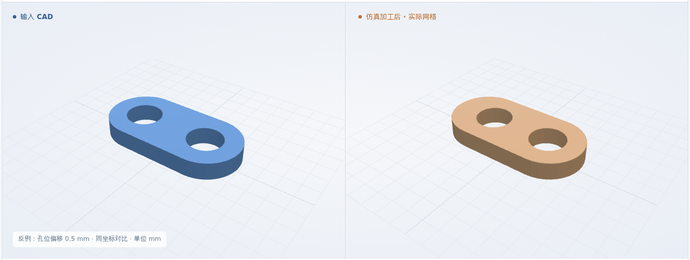

圆头三孔连接板 · 图纸派生参考件
100 × 14 × 3 mm 来料 → 厚 2 mm · R7 · 3 × φ8.5 通孔
通用 XYZ · φ4 平底铣刀 · T1 紫铜标签
体积 IoU99.9275%

本次新增：仿真检验增加长度、宽度、两端半径、孔距和右端边距检查。复用本例实际剩料，新增 7 项尺寸数值通过。
验证范围：图纸重建的单件参考；未覆盖 28 件拼板、装夹和镀银，整张工艺卡尚未通过。
体积 IoU = CAD 与实际剩料的交集 / 并集
100 × 14 × 3 mm 来料 → 厚 2 mm · R7 · 3 × φ8.5 通孔
通用 XYZ · φ4 平底铣刀 · T1 紫铜标签
多余材料 0.9125 mm³ · 缺失材料 0.8105 mm³ · 16 项软件几何检查通过。
| 检查项目 | 录入要求 | 仿真采样范围 | 数值结果 |
|---|---|---|---|
| P1 · 面铣保留区厚度 | 2 ± 0.08 | 2.0000–2.0000 25 个测点 | 数值通过 |
| C1 · 外形保留区厚度 | 2 ± 0.08 | 2.0000–2.0000 25 个测点 | 数值通过 |
| H1 · 孔径 | 8.5 ± 0.2 | 8.4807–8.5002 11 个截面 | 数值通过 |
| H2 · 孔径 | 8.5 ± 0.2 | 8.4807–8.5002 11 个截面 | 数值通过 |
| H3 · 孔径 | 8.5 ± 0.2 | 8.4807–8.5002 11 个截面 | 数值通过 |
5 / 5 项数值通过：厚度按两类特征分别核对，加上三个孔径。采用有限采样与 0.05 mm 数值保护带；卡图身份、版次及镀前 / 镀后适用性尚未批准。
复用上方连接板的实际剩料；原 IoU、CAD 和 NC 保持不变。原先未映射的 5 组尺寸标注拆为 7 项检查。
| 检查项目 | 录入要求 | 仿真采样范围 | 数值结果 |
|---|---|---|---|
| 总长（X） | 100 ± 0.3 | 99.9914–99.9914 | 数值通过 |
| 宽度（Y） | 14 ± 0.2 | 14.0000–14.0000 | 数值通过 |
| 左端半径 | 7 ± 0.2 | 6.9904–6.9980 | 数值通过 |
| 右端半径 | 7 ± 0.2 | 6.9903–6.9987 | 数值通过 |
| 右端 → H3 | 10 ± 0.2 | 9.9939–9.9939 | 数值通过 |
| H1 → H2 孔距（X） | 40 ± 0.3 | 40.0000–40.0000 | 数值通过 |
| H2 → H3 孔距（X） | 40 ± 0.3 | 40.0000–40.0000 | 数值通过 |
半径保护带 0.05 mm，其余 0.10 mm；采样范围加保护带后仍须落在公差内。保护带不是认证测量不确定度。新增要求 · 逐项测量与验收
加上原 5 项，共 12 项已定义尺寸数值通过。其余 11 项待判据、5 项测量不支持保持；2 组源标注（形位与表面符号）仍未映射。卡图身份、版次、镀前 / 镀后适用性和整卡批准仍待确认。
毛坯 → 面铣 → 圆头外形 → H1 → H2 → H3
三维回放暂不可用；图片和形状下载仍可查看。
以下复用既有仿真网格，未新增零件或重跑去料；合成件采用预先固定的软件检查条件。全部 8 份结果符合预期（含上方连接板）。每图左为原 CAD，右为既有仿真结果。
原体积 IoU 99.6512% · 4 项尺寸通过

原体积 IoU 99.6489% · 4 项尺寸通过

原体积 IoU 99.3114% · 6 项尺寸通过
原体积 IoU 74.3294% · 长、宽、半径均未通过

原体积 IoU 89.6404% · 端部非圆弧，半径不可测

原体积 IoU 91.0073% · 孔距未通过

原体积 IoU 99.3114% · 尺寸通过；工艺顺序拒绝